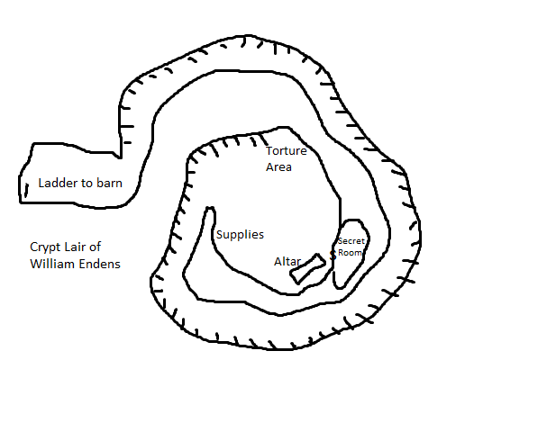

Incarna is a system of gritty realism. The mechanics promote deadly combat, intense action, and the intended focus is on story, skills, and a mixture of combat and puzzle/problem solving. Some rules herein may reference concepts unique to Incarna - you will need access to the online rule set for specific details. Most GM’s can assess the Incarna specific elements in context and leave or remove them as needed. Where you see this: , the GM must "plug-in" their own materials to round out the adventure in their campaign. It is strong recommended something such as a Gaming Contract be put into place.
- In DnD terms, Incarna uses 8 hours rest as a short rest, and 1 week rest as a long rest.
- Incarna uses Sanity; this is an optional element of DnD and should be used.
- Incarna uses a form of life-power called Essence; (Charisma+Sanity)/2 = the starting “well” of Essence (which returns at 1/Short Rest if used to trigger effects). Items with Essence themselves require attunement before their benefits can be gained.
Setting: Steel Realms
Planned Location
planned location
Environment: South Drift area is covered under a constant snow - from only an inch and sparse to 2 feet or more in the winter. It is steppe and forest.
Premise
The party is targeted by a group seeking sacrifices to open a pathway to hell, to allow Asmodeus and Sun Stealer to meet nearby. They are accidentally caught up in larger events, and witness to infernal plotting and must destroy the power of the cult locally, at least to temporarily stop the 2 forces from uniting until greater powers can intervene.
Motivation: MacGuffin?
Doing the right thing; preventing the deaths of many people.
Challenges
Powerful evil paladin, priests, undead, minor devils, and cultists.
Timeline
Background
Getting there
Premise
The party is targeted by a group seeking sacrifices to open a pathway to hell, to allow Asmodeus and Sun Stealer to meet nearby. They are accidentally caught up in larger events, and witness to infernal plotting and must destroy the power of the cult locally, at least to temporarily stop the 2 forces from uniting until greater powers can intervene.Challenge
Powerful evil paladin, priests, undead, minor devils, and cultists.Background
backgroundEnvironment
South Drift area is covered under a constant snow - from only an inch and sparse to 2 feet or more in the winter. It is steppe and forest.Planned Location
planned locationTimeline
The Attack The Inn and Recovery The Meeting of the Gods Attack on the Frozen Temple Plans RevealedThe Round Up
The party just happens to be in the wrong place and the wrong time. Five groups are sent out to round up sacrifices – of them, 3 are local powerful figure. A Priest, a politician, and a tradesman. The other 2 are random – the chaos nature of Sun Stealer demanding that some be random. They need at least 2 powerful figures for the sacrifice.
Average Search Party
This far away from their power base, undead must be created as used. There will be a precursor in the area of unexplained disappearances – and their corpses made into zombies and skeletons. Leading the way are several priests of Sun Stealer and their attendants – Oathbreaker paladins.
Coreblack is a known power in the north – warrior of the Blood Eye clan in Kalascor. He killed his chief in order that his best friend be put in charge. He follows Everdark. He is known to raise his fallen foes as skeletons and zombies, an entourage he can command.
Some are townsfolk that were tortured and killed. They have some of their possessions – enough to indicate identity.
Some are townsfolk that were tortured and killed. They have some of their possession – enough to indicate identity.
Rest and Recovery
Temiri the Diviner
Temiri of House Mataff himself was the target of a round-up, but he has able to draw on his occult powers and avoid them by hiding ahead of time. He has since looked into it, discovered a terrible force in the area, and is afraid for his life to look any closer at what is going on. The very thing that has drawn him to the area – The Emerald Falls – now is likely to hold an evil more powerful than a dozen mages. Temiri has been studying the area and learning to draw upon its power to enhance his own, he is familiar with the locale and the myths of it going back to the time when the Pine Tribes ruled the land. Their warriors and shaman still make secret pilgrimages to it to this day.
Temiri wishes to buy the party a round in thanks for returning the few possessions, and for putting their spirits to final rest. After an hour of small talk, he will turn to one of the party members and say.
Temiri the Diviner
Temiri (of House Mataff) believes himself was the target of a round-up, but he has able to draw on his occult powers and avoid them by hiding ahead of time. He has since looked into it, discovered a terrible force in the area, and is afraid for his life to look any closer at what is going on. The very thing that has drawn him to the area – The Emerald Falls – now is likely to hold an evil more powerful than a dozen mages. Temiri has been studying the area and learning to draw upon its power to enhance his own, he is familiar with the locale and the myths of it going back to the time when the Pine Tribes ruled the land. He believes their warriors and shaman still make secret pilgrimages to it to this day.
He will let that sink in and let the party talk and ask questions. If the party decides to lay low as he says, he will excuse himself to leave and get supplies and leave the area. If the party indicates they will stay and fight whatever is coming, he will be visibly relieved.
If Coreblack was this far south it was for nefarious reasons. He attacked you in the dim light of the evening – but still light. Whatever he hoped to accomplish, he was counting on catching you by surprise and it must have hurt him greatly to operate in partial sunlight. If he had time to amass animations, he’s been here for a while – this was planned, not coincidence.
- Tracking him / What can the party learn about Temiri -Following him, he visits a tea shop, and picks up some parchment and ink and spends the rest of the evening packing. The party will waste a night and learn nothing about him.
- Asking around, they learn he is indeed a Diviner of the House Mataff of South Drift – a small order of mages which pursue academic ends; recovery of lost artifacts and knowledge from the ancient northern kingdom.
- An old hag in grey is following him! She looks into his window – without care who sees her. Just when the party is going to apprehend, a massive flurry of snow and ice obscure her and she is gone.
Either that night, if they disturb him, or the next day if they mention to old hag, he will say:
On a Persuasion DC 10 check, he says he believes her to be related to the ancient Witch-Seers of Volgada.
On a Persuade DC 13 check, he says he dreams of her. The woman in grey warned him not to join the foraging before the storm – it would have been him and not the party into the area where Coreblack was waiting. He thinks, maybe, Coreblack was trying to ambush him.
DC 10 Insight = remember Coreblack did seem surprised at the party number, perhaps he was not expecting so many
Spy at the Inn
What appears as a child is not. She is a ___ – an Orrish spy sent to watch on the party after their defeat of Coreblack.
DC 20 check to notice – otherwise undetected. Detect evil reveals only something nearby!
Tracking Coreblack
Divining powers allow him to follow the party to the bottom of the ridge and east. North then into the snow, and out onto the plain. The party will say that the area looks familiar at some point – exactly where Temiri believed they were.
Coreblacks Camp
Coreblack’s camp seems to be a jagged gash cut into a low rise facing north. Its nearly impossible to spot, and out of the way of wind. It has fresh water – a small drip inside and the cave fits a couple dozen. The path leads further north under cave lip. There are 4 goblins guarding it with a crossbow each and 6 bolts a piece (potent weapons for orrish!) and 2 spiders of Go-Zen!! Crossbow (poison; DC 12 Con)
In the camp there is evidence that instructions written in Galdnorian were being read by Coreblack. The area that the party was ambushed in was marked in a crude map in a locked chest (buried in rubble – a key is buried under s smaller pile of rubble) – ridge line is laid out a building marked at the base in trader town with symbol of Sun Stealer Clergy (Religion 15). Orrish word for “contact” is carved on an animal skin map – it was attempted to burn but did not in the fire. Temri says he has a odd feeling about this.
The Cultists of South Drift
One of the maps found in Coreblacks camp was a house in Southdrift, marked with a contact point.
The location on you map is Enders turn – a turn around at the end of a lane. On it is a house, a workshop and barn, a fenced field with a par of horses and an covered pen for bad weather. It also has a hog pen, and a small orchard, along with a garden. In all, it looks a scene of pastoral splendor.
There appears to be a family of about 5 living there, perhaps one permanent apprentice and teamsters going and coming during the day,.
Asking around you find out William Endens is the best friend of the mayor of South Drift. He is very charismatic, has a family, been here for decades/apprenticed to last Cartwright; Any accusation would be highly political. His friend, and apprentice is Val.
> DC 16 Religion = holy day in 3 days for Sun stealer = best time to surprise if they are cult members; Family won’t be around at this time – going to his parents to the east.

Home of Enders the Cartwright
Day: During the day half the family will be fixing things and working in the shop.
Field and Pen at Enders Turn
Field: covered shelter for 4 animals – only 2 horses in the field.
Pen: 3 hogs
Orchard at Enders Turn
Plum orchard; there is a chick roost at one end against the back of the house, and several chickens roam about.
House at Enders Turn
During the day half the family will be cleaning the house – the women.
Shop and Barn at Enders Turn
Barn: During the day half the family will be fixing things and working in the shop. Quasit (shaped as an owl) perched in the loft will alert his master if possible. If they are alerted and its holy day, Val and Will will be ready to ambush. If alert and not holy day, Will is in house and Val in barn. Will will kill one of his children and attempt to get to the barn; his plan would be to collapse the altar area and escape in the confusion. He will sacrifice everyone do to this.
- Trap Door > Trapped with Glyph of Warding (Val and family excluded; acid damage)
= This will also cause a triggering of an emblazoned symbol of Mizras to appear on the barn roof as a warning (this is meant to throw off the track for anyone attacking) - Hidden Cellar Tunnel > You see a passage lined with punji sticks of wood and stone on the left side curling of into the distance. The passage is carved out of earth and clay, with some stone. It is held up with beams.
Tactics: Push into the punji sticks with eldritch blast (DC 10 Dex or extra D6)
Hidden Altar
Altar Area: You enter a large open area. There is only a flickering brazier illuminating a torture area, supplies and an altar. Sword emblems and Mizras symbols adorn many things.
> Has 2 of his wife miscarried fetuses (he said he buried them) that he soul tortured to get 2 uses of Dark One’s own luck
House: During the day half the family will be fixing things and working in the shop.
Val of Thurlow
The Tale of Val: Getting some new lumber on the sly (collecting outside the normal allotted times – no one mentions that), he was ambushed by a prowl pack, they chased him into a deep snow back and he fell through 40’ down into a treewell (where Val was staying, traveling to the town the next day as a laborer/teamster). They managed to blow Vals warning horn (some travelers get them just in case) and fend off a couple undead who threw themselves down the cliff to try and get them – harrowing 8 hour ordeal until help arrived – this has made them life long friends since and Val was taken as an apprentice.
5’9″, 145, brown hair, brown eye, right handed; carries 2 knives (can be thrown) and a club – he is a Jackalwere!
STR 12, INT 10, WIS 13, DEX 16, CON 12, CHA 13, SAN 10
In reality, Val was sent by the dark gods to assist in the plan to secure the area and make it safe for a cult base to be established. Sun Stealer was going to unleash the falls with a small cult and flood the area, destroying the library for good and killing hundreds.
William the South Drift
5’10”, #159, dirty blonde hair, right handed, pale, brown eyes; caries a short sword and dagger
STR 10, INT 12, WIS 11, DEX 12, CON 15, CHA 15, SAN 12
FAILED Transmuter 2nd – C x 3, 1st x 3
Powers: Arcane Recovery: x1st level spell
Spellbook: 1st: jump, mending, detect magic, ray of sickness, thunderwave /C: P: Prestidigitation, Acid Splash, Light (light used in his shop to impress people and give impression he was pro-light)
Warlock 9th – pact of the chain; “The Sun Thief Sends his Greetings!” – he has a pact with Sun Stealer
Familiar: Quasit prevents him from being surprised, watches from the top of the barn – shape shifted as an owl. If holy day, Disadvantaged on sight checks as he is distracted by the linked fervor of his master.
Invocations:
Dark One’s Blessing: On killing, gains HP = CHA mod + Warlock Level
Dark One’s Luck: Can add D10 once per rest + has 2 uses that do not return
Sculptor of the Flesh: Wisdom save or polymorph 1/rest
Mire of Mind: Slow
Dread Word: Confusion
Repelling Blast: Pushes 10 w/Eldritch Blast
Mask of Many Faces (will look like his wife if he’s not killed her)
Spells: SLOTS = 2 @ 4th – DC 14 / +6
Cantrips: Eldritch Blast, Mage Hand, Minor Illusion
1st: Arms of Hadar, Comprehend Languages, Hellish Rebuke, Illusory Script
2nd: shatter, invisibility, darkness, crown of madness
3rd: hunger of hadar, vampiric touch
4th: blight
TRAP: Mending is used as a trap spell. – the banners of Mizras and tapestries are help up and tied using the torn and frayed ends of materials. Mending will fix them and cause it all to fall collapsing the room with soft earth for 8D6 force damage. It will take 21 – STR in rounds (min. 1) for each PC to dig their way out, taking D4 force damage each round from exhaustion. Above the banner on the ceiling is a wooden cage with half dozen giant centipedes as well – there is a 20% chance each round per character of encountering one while digging out.
FEAT: One Man Show: Demonstrate willingness to sacrifice others at the drop of a hat. Any time an ally is sacrificed in such a way that the character may escape or avoid damage, they gain a user of Hidden Step: Use their action to hide in plain sight until they move or 1 hour is gone.
There is a journal with his whole history. Has a library and altar is under the barn (rudimentary/+2) on Sea King lore (wants to know where he came from) – he is from Thurlow and Gwinnish blood. The books are from the library at Doinesh – that library was frozen and no one has been there in thousands of years. How can it be? As his final initiation into the pact, he killed 2 peddlers and gained his familiar. His familiar was able to get into areas he could not and bring back books. His Quasit found the ghoul in torpor years ago and with the forbidden knowledge of the animus font he believed he could become a Lich Lord himself. He drug the ghoul to the hidden chamber and exposed it to the the animus font. The ghoul dug its way straight up and escaped into the night – now it prowls and killed every full moon – waiting for the corrupted moon when it will kill on a scale the boggles the mind. It got away from its would be master, and avoids him thinking it will be shackled again. It has since dug its way in and out of the ice around Doinesh, exposing more books. William thinks its enough forbidden knowledge to make him a lord of the north. He has killed dozens, poisoned more and brough small miseries for decades. He is waiting for a sign.
Val
Val will be used as a delaying action. If Val survives to the end of the battle, where the collapse is perofrmed.
- We worked hard to get where he was at
- When he was young, he made forays with the adepts of House Mataff locally but never found anything
- He studied to be a wizard but was not good enough – he uses his minor power of light on the city forays but he ended up fighting more than not – he gave up Ezrilus and took to the ways of Mizras
- The master and his family were taken in a season of bad sickness and he took his place
- He is a follower of Mizras and the leader of his flock that he has built up in the last 5 years
- He has a shrine to his master and makes his children (who never knew him) offer good wishes too their family in the afterlife
- He wanted to be a High Kings ranger – it was his dream when he was young
- Rumors are he was a soldier prior to coming here
- He wants his daughter to join the sisterhood of Merkaine
Secrets of Creb-Navarood
Celebrating After Creb-Navarood
The Interloper Sets its Sights
Advice > Temiri says that he has sensed a god-like power with his meager powers. It is the time of the Green Falls – 3/year the falls at Calibri Lake turn green. Normally he uses this time to enhance his own powers, but he says to stay away. There is a power tapping into the falls, and the barriers between worlds is lowering and that dangerous things will prowl the lands nearby. Already they have come for me – but my own powers warned me. They ransacked my home, and fortunately did not possess the powers to perceive me, hidden as i was by my own magics. Your own intuition is telling you to stay away.
He says this, but its clear he may not believe it – he is fearful.
Calibri Lake and the Emerald Falls
The Full Moon
Three times a year, under the full moon, the mists and froth of the falls turns green – opening a gate to The Feywild. During this time, it enhances the senses and power of divination’s – it allows the senses the stretch farther, and be more accurate for those who wish to cover themselves with the mist of the falls.
The Summoning
The Sacrifice
S: You promised meeee…
A: You are barely here… there is nothing to be done. I sought advice… from places even I am uncomfortable looking in.
S: You were paid handsomely! Blood and souls…
A: Worn souls… bitter blood. And mostly failure.
S: Blood and souls nonetheless.
A: I am here. Your worshipers brought me – mostly with their own lives, leaving us less than protected I might add. What other business do we have? Tell me i was not summoned forth to merely answer a question you already knew.
S: The Cowled One… plans within plans. They plot and we dance – I sense a growing storm.
A: What care I? Its reach is contained – mostly here now. I dare not advance my own forces of hell here – unless you seek to partner and usurp the power of your brother? No… I thought not. The power of your siblings is unmatched here. Even I cannot stand under the light of The Interloper and hope to conquer any lands here. Your power is supreme here yet – you know this.
S: Like a beast’s power in a cage. Lend me but a small force of your host. I will finally succeed.
A: For what gain!? The carcass of a barren world? Your birth pangs saw the death of gods and world alike – I know where your path leads. I enjoy the physical world! Its carnal pleasures and wickedness. You would cut even the air if it bled. There would be nothing left for me to enjoy should I do this. Your nihilism has nothing to offer one such as I.
S: I could kill you.
A: Alas… no. Try you may, but our powers are equally matched within this chamber – look around, your followers sacrifice saw to that. Not that you care… and it was enjoyable to listen to their screams.
S: Arrrgh! Lend me some agents, just a few to wreak the havoc you know I could. It is both of our plans The Cowled One will thwart.
A: Patience. Our plan will benefit us both if you let it.
S: No! I will not be thwarted! We will not be thwarted!
A: I cannot see. She cannot see where he is concerned. I am as blind as you. Patience is all that is left.
S: Millennium I have schemed. Centuries have I waited for this moment.
A: And yet… patience is all we have. I have. You… have your hate.
S: It is your plans too that will falter! You are a fool to have no fear or desire to stop that… thing!
A: Should I? What is to gain? He has been silent for so long. If it casts its gaze our way we will be disturbed – such is the way of things. Uncertainty and fear will be the goblet we drink from should we choose to continue – even more than the heady brew you normally drink.
S: It need not be like this. Others nearly conquered that one several times. His shadow is caged and worthless. Bound to the Thrice Shackled Prince – not even I could wrest it from him, though he be… dead, in his place of power.
A: And look what it cost him.
S: Our gain.
A: Your gain.
S: Fuck you! How can it move with such impunity? Where does the power come from!? I can advance your cause…*
A: My cause! You talk of causes, you vile brute. Perhaps I should find the shade of your mother to fuck while we wait for you to contribute to my cause. You are a shallow creature of bad habits and devoid of intellect – even yet without a soul. I can make no claim to cause here. You and yours have this place of power locked. My cause is meaningless! I find this conversation… odious. Farewell beast – I am sure we will meet soon again – too soon for my tastes.
S: I’ll…*
A: Shit! Something is happening! I sense… *
The dark form twists and writhes and vanishes in a puff of foul smelling smoke.